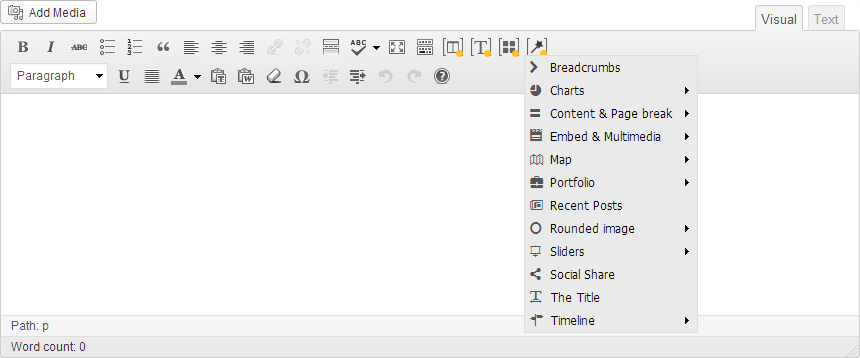

Minicorp comes with an outstanding set of shortcodes available to help you assemble the content
just in seconds. Whether you are a developer or a newbie you will be able to make thousands of combinations.
All shortcodes are integrated into the default WordPress Visual editor. Click on the 4 shortcodes
button to explore them all. You can view all shortcodes in action on http://themes.ishyoboy.com/minicorp/wp/shortcodes/

The shortcodes are divided into 4 logical categories:
- Columns Shortcodes - Main pages layout
- Typography Shortcodes - Text related shortcodes
- Block Shortcodes - Main content shortcodes
- Special Shortcodes - Advanced, dynamic shortcodes
Global attributes
All Minicorp shortcodes share few global attributes. These attributes can be assigned to each individual shortcode
to provide even more specific styling and functionality.
- id - optional attribute. Unique "id" used by advanced HTML users to add custom CSS styles
- css_class - optional attribute. Unique "class" used by advanced HTML users to add custom CSS styles
- style - inline CSS style. Used by advanced HTML users to add custom CSS styles
- tooltip (text of tooltip) - add tooltip to shortcode
- tooltip_color (color1 - color4) - change color of tooltip
Accordion & Toggle
Accordion and toggle are perfectly suitable for FAQ sections. They generate accordion styled content areas.
The shortcode consist of two shortcodes which need to be used together.
[accordion] and [acc_item]. The [acc_item] shortcode
should be used inside [accordion].
The only difference between accordion and toggle is that toggle allows you to have more opened items at the same time.
Attributes for [accordion] / [toggle]:
- tag (h1 - h6) - (default: h5) optional attribute representing the html element in which the titles are entered. All nested [acc_item] will inherit this tag as their default one.
- all global attributes
Attributes for [acc_item] / [tgg_item]:
- title - mandatory attribute representing the title of the section
- tag (h1 - h6) - optional attribute representing the html element in which the title is entered. It overrides the default tag
- active (yes / no) - optional attribute. Used to mark the section which should be opened by default
Example (accordion default):
[accordion]
[acc_item title="Enter Title here." active="yes"]Enter your content here.[/acc_item]
[acc_item title="Enter Title here."]Enter your content here.[/acc_item]
[/accordion]
Example (accordion custom):
[accordion tag="h3"]
[acc_item title="..."] … [/acc_item]
[acc_item title="..." tag="h2"] … [/acc_item]
[acc_item title="..." active="yes"] … [/acc_item]
[acc_item title="..." tag="h6"] … [/acc_item]
[/accordion]
Example (toggle default):
[toggle]
[tgg_item title="..." active="yes"] … [/tgg_item]
[tgg_item title="..."] … [/tgg_item]
[tgg_item title="..."] … [/tgg_item]
[/toggle]
Examle (toggle custom):
[toggle tag="h3"]
[tgg_item title="..."] … [/tgg_item]
[tgg_item title="..." tag="h2"] … [/tgg_item]
[tgg_item title="..." active="yes"] … [/tgg_item]
[tgg_item title="..." tag="h6"] … [/tgg_item]
[/toggle]
Top
Alerts
Alert boxes can be used to display various messages on the site. Show information, warnings and errors in an interesting way.
Attributes:
- type (info / warning / success / error) - type of alert box
- closable (yes / no) - show close button in top right corner
- icon (name of icon class - "icon-ok") - show icon in top right corner (All available icons list)
- align (left / center / right) - text align for alert box
- all global attributes
Example (default):
[alert type="info"] … [/alert]
Example (closable):
[alert type="success" closable="yes"] … [/alert]
Example (iconic):
[alert type="warning" icon="icon-attention-2"] … [/alert]
Example (closable):
[alert type="success" closable="yes"] … [/alert]
Example (custom):
[alert type="error" icon="icon-cancel-2" align="left"]
[headline tag="h5"] … [/headline]
[headline tag="h6"] … [/headline]
[/alert]
Top
Boxes
Wrap your content into boxes and make them more visible and catchy. Add icon, change align, change color, add buttons, whatever you want ...
Attributes:
- color (color1 - color4) - class for background color
- icon (name of icon class - "icon-ok") - show icon in top right corner (All available icons list)
- align (left / center / right) - text align for alert box
- all global attributes
Example (default):
[box color="" icon="" align="left"] … [/box]
Example (iconic):
[box color="color1" icon="icon-medkit" align="center"] … [/box]
Example (custom):
[box color="" icon="" align="left"]
[one_half]
[headline tag="h2"] … [/headline]
[headline tag="h3"] … [/headline]
[/one_half]
[one_half align="right"]
[button url="#" size="big" color="color1" new_window="yes"] … [/button]
[/one_half]
[/box]
Top
Breadcrumbs
Exactly what breadcrumbs do, show full path where you are currently in the page hierarchy.
Attributes:
Example:
[breadcrumbs]
Top
Box group
Wrap your boxes with "box_group" shortcode and they will have the same height.
Attributes:
Example (boxes wrapped inside "box_group"):
[box_group]
[one_fourth][iconic_box icon="icon-cog" color="color2"] … [/iconic_box][/one_fourth]
[one_fourth][iconic_box icon="icon-award" color="color1"] … [/iconic_box][/one_fourth]
[one_fourth][iconic_box icon="icon-star" color="color2" align="center"] … [/iconic_box][/one_fourth]
[one_fourth][iconic_box icon="icon-bookmark" color="color3" align="center"] … [/iconic_box][/one_fourth]
[/box_group]
Example (Boxes without "box_group"):
[one_fourth][iconic_box icon="icon-cog" color="color2"] … [/iconic_box][/one_fourth]
[one_fourth][iconic_box icon="icon-award" color="color1"] … [/iconic_box][/one_fourth]
[one_fourth][iconic_box icon="icon-star" color="color2" align="center"] … [/iconic_box][/one_fourth]
[one_fourth][iconic_box icon="icon-bookmark" color="color3" align="center"] … [/iconic_box][/one_fourth]
Top
Buttons
Create "Call to action", "Read more" and other different buttons with "button" shortcode. 3 sizes, 4 colors, many possible combination.
Attributes:
- color (color1 - color4) - class for background color
- size (small / medium / big) - size of button
- url - url of button
- new_window (yes / no) - if link should be opened in new window
- full_width (yes / no) - make button width 100% of parent width
- bg_color (red, #ccc) - advanced color used for button background
- text_color (blue, #999) - advanced color used for button text
- align (left / center / right) - align of button
- all global attributes
Example (default):
[button url="#" size="small" new_window="yes"] … [/button]
Example (advanced):
[button url="#" size="small" new_window="yes" bg_color="red" text_color="#fff" full_width="yes"] … [/button]
Example (advanced):
[button url="#" size="medium" new_window="yes" full_width="no"]
[icon icon="icon-download-cloud"]
…
[/button]
Example (advanced):
[button url="#" size="big" color="color3" new_window="yes" full_width="no" tooltip="..."] … [/button]
Top
Charts
Show off your progress with pie charts. Easy to use, easy to customize, easy to do whatever you want.
Attributes:
- percent (number) - percentage of chart
- align (left / center / right) - align of whole chart
- color (color1 - color4) - class for chart color
- size (number) - size of chart in px
- line_width (number) - width of line
- rounded (yes / no) - if line cap is rounded or default square
- animation_time (seconds) - time of animation in seconds. If this attribute is not defined animation is off
- icon (name of icon class - "icon-ok") - icon used inside chart (All available icons list)
- track_color (red, #ccc / color1 - color4) - color of track of chart
- bar_color (blue, #999 / color1 - color4) - color of bar of chart
- text_size (number) - size in px of text inside chart
- all global attributes
Example (default):
[chart percent="68" align="center" color="color1" size="200" line_width="10"] … [/chart]
Example (advanced):
[chart percent="36" align="center" color="color2" size="200" line_width="15" rounded="yes" animation_time="3"] … [/chart]
Example (advanced):
[chart percent="49" align="center" color="color4" size="200" line_width="20" rounded="yes" animation_time="2" icon="icon-tools" text_size="30"] … [/chart]
Example (advanced):
[chart percent="82" align="left" size="175" line_width="13" text_size="50" track_color="#eee" bar_color="lightblue"][icon icon="icon-brush"][/chart]
Example (advanced):
[chart percent="23" align="center" size="250" line_width="20" rounded="yes" track_color="#eee" bar_color="color1"][headline tag="div" color="color1" css_class="h1"] … [/headline][/chart]
Top
Columns / Row
Basic elements for building thousands combinations of layouts. Default, advanced, predefined ... create whatever you can imagine.
Attributes:
Example (row):
[row]
[one_half] … [/one_half]
[one_half] … [/one_half]
[/row]
[divider]
[row]
[one_third] … [/one_third]
[one_third] … [/one_third]
[one_third] … [/one_third]
[/row]
Example (default):
[row]
[one_third] … [/one_third]
[one_third] … [/one_third]
[one_third] … [/one_third]
[/row]
Example (advanced):
[row]
[grid4] … [/grid4]
[grid8] … [/grid8]
[/row]
Example (custom):
[row]
[grid3] … [/grid3]
[grid6 align="center"] … [/grid6]
[grid3 align="right"] … [/grid3]
[/row]
Top
Columns / row nested
Needed to create more complex layouts with nested columns? Not a problem. With Minicorp you can
use 3 levels of nested columns - nested1, nested2, nested3.
Attributes:
Example (default):
[row]
[one_half]
…
[divider]
[row_nested1]
[one_half_nested1] … [/one_half_nested1]
[one_half_nested1] … [/one_half_nested1]
[/row_nested1]
[/one_half]
[one_half] … [/one_half]
[/row]
You can use nested shortcodes also with "grid1 - grid12". Simply add "nested1 - nested3" at the end of "grid*" shortcode.
Example (first level of nesting):
[grid1_nested1][/grid1_nested1]
Example (second level of nesting):
[grid12_nested2][/grid12_nested2]
Example (third level of nesting):
[grid4_nested3][/grid4_nested3]
Top
Content & Page break
Use content break shortcode to create important sections on any page, give them background or pattern. You can even split your page content to more parts with page break shortcode.
! Content & page break cannot be used on page with sidebar. If you turn on sidebar on page with content / page break they will automatically hide!
! Content & page break also cannot be used in the lead area.
Attributes for [content_break]:
- This shortcode has no attributes! It must always be used with [section] shortcode. Set the attributed for it.
Attributes for [section]:
- color (color1 - color4) - class for section color
- full_width (yes / no) - Makes the section full-width in unboxed pages
- pattern (yes / no) - Inherit pattern from lead & footer settings
- pattern_url ( link) - Path to the image to be used as pattern. The "pattern" attribute needs to be set to "yes"
- parallax_type (static / dynamic) - use parallax effect for background pattern / image. Patter type "static" means that image is static without any movement. Pattern type dynamic means that you can customize it and change scroll speed, duration and easing.
- parallax_scroll (range from 0.0001 - 1) - scroll speed (working only with parallax type "dynamic")
- parallax_duration (in ms) - duration of animation (working only with parallax type "dynamic")
- parallax_easing - easing of animation - possible easing options (working only with parallax type "dynamic")
- all global attributes
Attributes for [page_break]:
Example (separator):
[content_break][section][/section][/content_break]
[content_break][section color="color2"][/section][/content_break]
[content_break][section full_width="yes"][/section][/content_break]
[content_break][section color="color2" full_width="yes"][/section][/content_break]
[page_break][/page_break]
[page_break full-width="yes"][/page_break]
Top
Divider & Separator
Make your content clear and more readable by defining white spaces with divider and separator shortcode.
Attributes:
Example (divider):
[row]
[one_half] … [/one_half]
[one_half] … [/one_half]
[/row]
[divider]
[row]
[one_half] … [/one_half]
[one_half] … [/one_half]
[/row]
Example (separator):
[row]
…
[/row]
[separator]
[row]
…
[/row]
Top
Dropcaps
Highlight first character in first word inside paragraph, 2 styles, 4 colors, just to choose ...
Attributes:
- color (color1 - color4) - class for dropcap color. If dropcap is boxed this color is color of background
- boxed (yes / no) - if dropcaps is boxed or not
- all global attributes
Example (default):
[dropcap color="color1"] U [/dropcap] …
Example (boxed):
[dropcap color="color2" boxed="yes"] A [/dropcap] …
Top
Embed
The embed shortcode is a standard WordPress shortcode. It provides the possibility to embed Video,
Audio and Image content from third-party websites like Vimeo, YouTube, SoundCloud, Instagram, Flickr, Twitter, etc..
All supported services can be found on http://codex.wordpress.org/Embeds
! Avoid using "https://" links if possible. Rather use "http://" as WordPress experiences problems with https.
Attributes:
- Embed seems to ignore attributes in the current version of WordPress so there are none.
Example (Flickr):
[embed]http://www.flickr.com/photos/dcdead/8585847956[/embed]
Example (Instagram):
[embed]http://instagram.com/p/Ww4pvaS-qE/[/embed]
Example (Soundcloud):
[embed]http://soundcloud.com/slamboree/slamboree-zorba-the-remix[/embed]
Example (Twitter):
[embed]http://twitter.com/ishyoboydotcom/status/324029133594185728[/embed][/slide]
Example (Vimeo):
[embed]http://vimeo.com/32238183[/embed]
Example (YouTube):
[embed]http://www.youtube.com/watch?v=OW-J2pQrlsw[/embed][/slide]
Top
NEW in v1.1 - Featured Image
A shortcode which dynamically displays the image which is set as featured image. It can be used on Pages and within the content of Posts and Portfolio posts.
Attributes:
- align - (left/right/center) - image alignment within the content. If centered selected, a fixed "width" should be set inside the css "style" attribute.
- url (link) - if the image should be linked to a file or page
- new_window (yes / no) - if link should be opened in new window
- open_full_version (yes / no) - open full version of original image
- show_caption (yes / no) - If a caption is set for the featured image you can decide whether to display it or not. Yes by default
- size (theme-large, theme-half, theme-third, theme-fourth, full, large, medium, thumbnail) - The size of the image which will be displayed. "theme-large" is the default value.
- all global attributes
Example (default):
[featured_image align="" url="" size="theme-large" new_window="no" open_full_version="" show_caption="no"]
Example (custom):
[featured_image align="" url="" size="medium" new_window="no" open_full_version="yes"]
Top
Headlines
6 sizes, 4 colors, lined, iconic, even text with style as headlines but you can define your own tags ...
Attributes:
- tag - (h1 - h6, div, span, p) - attribute representing the html element in which the titles are entered.
- color (color1 - color4) - class for headline color
- lined (yes / no) - show line after headline
- icon (name of icon class - "icon-ok") - square icon used before headline (All available icons list)
- css_class - use special classes h1 - h6 to make elements such as div, span, p, etc.. have the H1 - H6 styles.
- all global attributes
Example (default):
[headline tag="h1" color="color1"] … [/headline]
Example (iconic):
[headline tag="h2" color="color2" icon-"icon-video"] … [/headline]
Example (lined):
[headline tag="h3" lined="yes"] … [/headline]
Example (section):
[section_headline tag="h4" lined="yes" color="color1"] … [/section_headline]
Example (custom):
[headline tag="div" css_class="h3" icon="icon-address" lined="yes" color="color1" tooltip="..." tooltip_color="color1"] … [/headline]
Top
Icons
Want to use icons in your theme to emphasise something? Use one of 3 types of icon - default, square and circle - and choose from 1000+ icons included in Minicorp theme. All available icons list
Attributes:
- type (default / square / circle) - type of icon
- icon (name of icon class - "icon-ok") - icon to be displayed (All available icons list)
- size (number) - size of icon in px. E.g.: "36"
- align (left / center / right) - alignment of icon
- color (color1 - color4) - color of default or background color of square / circle type
- url - url of icon. If this is not set, the icon is not clickable
- new_window (yes / no) - if link should be opened in new window
- all global attributes
Example (default):
[icon icon="icon-download-cloud" size="40" align="left"] …
Example (square):
[icon type="square" icon="icon-archive" size="30" align="center" color="color1"] …
Example (square as link):
[icon type="square" icon="icon-coffee" size="35" align="center" color="color3" url="#" new_window="yes"] …
Example (circle):
[icon type="circle" icon="icon-user-pair" size="12" align="right" color="color4"] …
Example (circle as link):
[icon type="circle" icon="icon-cafe" size="32" align="left" url="#" new_window="yes"] …
Top
Lists
Create 9 types of unordered list + ordered list and possibility to colorize their symbols ...
Attributes:
- type (plus / minus / tick / cancel / pointer / square / square-empty / circle / circle-empty) - type of list
- color (color1 - color4) - colorize symbols of lists
- all global attributes
Example (plus):
[list type="plus" color="color1"]
- Item 1
- Item 2
- Item 3
- Item 4
[/list]
Example (square-empty):
[list type="square-empty" color="color1"]
- Item 1
- Item 2
- Item 3
- Item 4
[/list]
Example (ordered list):
1. Item 1
2. Item 2
3. Item 3
4. Item 4
Top
Map
Use Google Maps shortcode to show and mark up to 10 important locations on a single map. Use the default layout or customize the look to better fit your design.
Attributes:
- color (color1 - color4 or #000) - Main color of the map
- invert_colors (yes / no) - When set to "yes" the light colors will become dark.
- align (left or right) - Used only when the width of the map is not 100%
- lat_lng_1 ... lat_lng_10 - coordinates (Latitude and Longitude) of each location on the map. To get coordinates of a given address you can enter the address here: http://www.kenjikojima.com/jikankei/map.html or google for "Address to Latitude longitude".
- zoom (from 1 to 16 max) - The amount of zoom applied to the map. The lower the number, the more area is visible.
- height (number) - set height in px for the map
- all global attributes
Example (default):
[map lat_lng_1="36.5079367, -4.8863523" lat_lng_2="36.5099367, -4.8764523" lat_lng_3="36.5109367, -4.8953523" zoom="15"]
Example (zoom & height):
[map lat_lng_1="36.509, -4.886" zoom="11" height="300"]
Example (color1):
[map lat_lng_1="36.509, -4.886" zoom="11" color="color1" height="300"]
Example (custom color & inverted colors):
[map lat_lng_1="36.5079367, -4.8863523" zoom="12" color="#a0ce4e" invert_colors="yes" ]
Top
Mark
Want to highlight something important? Simply use mark shortcode ...
Attributes:
Example (default):
[mark] … [/mark]
Example (default):
[mark color="color3"] … [/mark]
Example (custom - headline):
[headline tag="h1" color="color2"] … [mark color="color1"] … [/mark] … [/headline]
Example (custom - inside iconic box):
[iconic_box icon="icon-globe" align="center"][headline tag="h2" color="color4"] … [mark color="color1"] … [/mark] … [/headline][/iconic_box]
Top
Menu
Use your dynamic WordPress menu on any place - content, sidebars, footer ...
Attributes:
- menu - id, slug or Name of WordPress menu
- depth (number) - level of the displayed sub-menus, default is "0"
- color (color1 - color4) - color of menu
- all global attributes
Example (default):
[menu menu="main" depth="0"]
Example (custom):
[menu menu="main" depth="1" color="color1"]
Top
Portfolio shortcode
Show off your portfolio with portfolio shortcode by customizing columns, height, layout, navigation. You can even create multiple portfolios on one page.
Attributes:
If you don't add any of the following attributes to the portfolio shortcode they will be loaded from the global settings in "Theme Options -> Portfolio". If added, each portfolio shortcode can be customized independently, ignoring the globals, set in "Theme Options -> Portfolio".
- height (number) - set max-height in px for portfolio items / default is not set so items have their original height
- per_page (number) - number of displayed items. If you would like to show all set attribute to "-1".
- columns (2, 3, 4) - number of columns for displaying items
- masonry (yes / no) - use masonry layout
NEW in v1.2:
- fluid_layout (yes / no) - Choose weather the images width will remain always fixed or will scale down on smaller screens
- layout_style (1, 2, 3, 4) - Choose one of the 4 layout styles.
- animate_filter (yes / no) - If navigation is set to "yes" the sub categories will use animated filter instead of opening the page
- show_title (yes / no) - Override the global setting and decide whether to display the title
- show_categories (yes / no) - Override the global setting and decide whether to display the categories
- show_link_button (yes / no) - Override the global setting and decide whether to display the link button
- show_popup_button (yes / no) - Override the global setting and decide whether to display the popup button (fancybox)
Following attributes are regular
- category - display items just from specific category
NEW in v1.4:
- Multiple categories can be specified separated by commas to display items only from them. E.g. "illustrations, web"
- Negative categories can be specified to exclude categories. E.g. "-illustrations, -web"
- Negative categories can be mixed with regular ones. E.g. "illustrations, -web"
- order (DESC / ASC) - order portfolio items
- navigation (yes / no) - show category navigation above portfolio
- pagination (yes / no) - display pagination under portfolio. ! If more portfolio shortcodes used one ONE page, this attribute works just for the first defined portfolio shortcode.
- view_all (yes / no) - show "View All" button under portfolio which goes to current portfolio. If all portfolio items are shown (attribute per_page="-1") this button is automatically disabled.
- all global attributes
Example (default):
[portfolio category="" order="DESC" navigation="yes" pagination="yes" view_all="no"]
Example (advanced):
[portfolio category="portfolio-1" order="ASC" navigation="yes" pagination="no" view_all="yes" height="200" per_page="6" columns="3" masonry="no"]
Example (advanced):
[portfolio category="" order="DESC" navigation="no" pagination="no" per_page="-1" columns="4" masonry="yes"]
NEW in v1.2 - Example (advanced):
[portfolio category="" order="DESC" navigation="yes" pagination="no" view_all="no" height="" per_page="-1" columns="3" masonry="yes" fluid_layout="yes" layout_style="2" show_title="yes" show_categories="yes" show_link_button="yes" show_popup_button="yes" animate_filter="yes"]
Top
Portfolio Gallery
Show gallery of portfolio detail. This shortcode can only be used inside the content/lead of one portfolio item.
Attributes:
- slideshow (yes / no) - create slideshow from images
- animation (slide / fade) - style of animation of the slideshow
- navigation (yes / no) - show navigation under slideshow
- autoslide (yes / no) - autoslide slideshow
- interval (seconds) - interval of autoslide
- NEW in v1.1 - thumbnail_size (theme-large, theme-half, theme-third, theme-fourth, full, large, medium, thumbnail) - The size of the image which will be loaded as a thumbnail within the slideshow or the post. "theme-large" is the default value.
- all global attributes
Example (default):
[portfolio_gallery slideshow="yes" animation="slide" navigation="yes" autoslide="no" interval="" thumbnail_size=""]
Example (custom):
[portfolio_gallery slideshow="yes" animation="slide" navigation="no" autoslide="yes" interval="6" thumbnail_size=""]
Example (custom):
[portfolio_gallery slideshow="no" animation="" navigation="" autoslide="" interval="" thumbnail_size="theme-half"]
Top
Portfolio Prev / Next
Show next / prev project buttons. This shortcode can only be used inside the content/lead of one portfolio item.
Attributes:
- prev_text - text of previous button
- next_text - text of next button
- align (left / center / right) - alignment of prev / next buttons
- all global attributes
Example (default):
[portfolio_prev_next prev_text="" next_text="" align="left"]
Example (custom):
[portfolio_prev_next prev_text="Previous >" next_text="< Next" align="center"]
Example (custom):
[portfolio_prev_next prev_text=">" next_text="<" align="right"]
Top
Portfolio Categories
Show categories of portfolio detail. This shortcode can only be used inside the content/lead of one portfolio item.
Attributes:
- separator (, ) - separator between each category
- links (yes / no) - make categories links
- align (left / center / right) - alignment of categories list
- container (p / div / span / ul) - tag used for container
- before - For advanced users. Any text (HTML tag) to be displayed before each category
- after - For advanced users. Any text (HTML tag) to be displayed after each category
- all global attributes
Example (default):
[portfolio_categories separator=", " links="yes" align="left"]
Example (custom):
[portfolio_categories separator=" | " links="no" align="center"]
Example (custom):
[portfolio_categories separator="" links="yes" align="left" container="ul" before="<li>" after="</li>"]
Top
Pre & Code
Need to display code in your content? Not a problem ...
Attributes:
Example (pre):
[pre]<!doctype html>
<html>
<head>
<title>Title of the document</title>
</head>
<body>
The content of the document……
</body>
</html>[/pre]
Example (code):
… lacus risus eleifend [code]class="extra-huge"[/code] sem. Pellentesque lacus … eros ligula, elementum [code]var button = $('.button');[/code] … at sagittis quis …
Top
Quote & Pullquote
Want to quote somebody or to write an interesting quote you have found?
Attributes for [quote]:
- color (color1 - color4) - color of quote. If attribute boxed is set to yes then this will be color of background.
- boxed (yes / no) - if quote is boxed or not
- all global attributes
Attributes for [pullquote]:
- color (color1 - color4) - color of quote. If attribute boxed is set to yes then this will be color of background.
- boxed (yes / no) - if quote is boxed or not
- align (left / right) - alignment of pullquote and text
- all global attributes
Attributes for [author]:
Example (default):
[quote color="color1"] … [author] … [/author][/quote]
Example (boxed):
[quote color="color1" boxed="yes"] … [author align="left"] … [/author][/quote]
Example (default):
[pullquote color="color2" align="right"] … [author align="left"] … [/author][/pullquote] …
Example (boxed):
[pullquote color="color3" align="right" boxed="yes"] … [author] … [/author][/pullquote] …
Top
Recent Posts
Show recent posts from blog has never been easier. Change columns, headlines style, make autoslide slideshow ...
Attributes:
- category - display posts just from specific category.
NEW in v1.4:
- Multiple categories can be specified separated by commas to display posts only from those. E.g. "nature, cars"
- Negative categories can be specified to exclude categories. E.g. "-nature, -cars"
- Negative categories can be mixed with regular ones. E.g. "nature, -waterfalls, -rocks"
- order (DESC / ASC) - order recent posts
- columns (1 - 6)
- count (number) - count of showed recent posts
- show_title_icon (yes / no) - make headlines iconic (the icon is fixed based on the post format)
- show_media (yes / no) - show media attachment (image, audio, video)
- show_date (yes / no) - show publish date
- show_categories (yes / no) - show categories
- show_read_more (yes / no) - show "Read more" button
- show_author (yes / no) - show author
- show_tags (yes / no) - show tags
- show_comments (yes / no) - show number of comments
- slideshow (yes / no) - create slideshow
- animation (slide / fade) - animation transition effect
- navigation (yes / no) - show slideshow navigation
- autoslide (yes / no) - autoslide slideshow
- interval (seconds) - interval in seconds for autoslide
- all global attributes
NEW in v1.4:
- show_excerpt (yes / no) - show post excerpt
- order_by ('date' / 'rand' / 'title' / 'ID' / 'author') - ordering criteria, default: 'date' (All criteria)
- post_format ('audio' / 'video' / 'link' / 'quote') - Filter recent_posts by post format. Multiple and Negative formats can be used. E.g.: "-audio, -video"
- post_ids (number) - Comma separated post IDs to display only the mentioned posts (positive and negative). E.g. "15"
- post_tags ("slug") - Comma separated Tag slugs to filter results having the mentioned tags (positive and negative). E.g.: "web, -php, -tools"
- skip (number) - Number of posts to skip. E.g. "4"
Example (default):
[recent_posts category="" order="DESC" columns="4" count="4" show_title_icon="no" show_media="yes" show_date="yes" show_categories="yes" show_author="no" show_tags="no" show_comments="no" slideshow="no" animation="" navigation="" autoslide="" interval=""]
Example (custom - iconic titles, author, tags, comments):
[recent_posts category="" order="DESC" columns="3" count="6" show_title_icon="yes" show_media="no" show_date="yes" show_categories="yes" show_author="yes" show_tags="yes" show_comments="yes" slideshow="no" animation="" navigation="" autoslide="" interval=""]
Example (custom - slideshow):
[recent_posts category="" order="ASC" columns="2" count="4" show_title_icon="no" show_media="yes" show_date="yes" show_categories="yes" show_author="no" show_tags="no" show_comments="no" slideshow="yes" animation="" navigation="" autoslide="" interval=""]
Example (custom - autoslide):
[recent_posts category="" order="DESC" columns="1" count="4" show_title_icon="yes" show_media="yes" show_date="no" show_categories="no" show_author="no" show_tags="no" show_comments="no" slideshow="yes" animation="fade" navigation="no" autoslide="yes" interval="5"]
Example (Advanced Filtering):
[recent_posts category="web-development, -servers" order="DESC" order_by="rand" columns="4" count="4" show_title_icon="no" show_media="yes" show_date="yes" show_categories="yes" show_author="no" show_tags="no" show_comments="no" show_excerpt="yes" slideshow="no" animation="" navigation="" autoslide="" interval="" post_format="video, audio", post_ids="-326", post_tags="wordpress", skip="1"]
Top
Rounded images
Rounded image shortcode is an "update" of the regular images. There is no need to use advanced photo editing programs to create rounded image anymore.
Attributes:
- color (color1 - color4) - set the color of the border and arrow
- align (left / right) - Alignment of the rounded image (if you would like to center rounded image inside a container you have to set align="center" to rounded image parent element e.g. grid)
- arrow (top / right / left / bottom) - add an arrow to the immage to look like a bubble
- width (number) - in pixels. Sets the maximum width of the rounded image.
- border_width (number) - in pixels. Sets the width of the dorder around the frame
- all global attributes
Example:
[rounded_image]add image from library[/rounded_image]
Example (custom):
[rounded_image color="color3" border_width="20"]add image from library[/rounded_image]
Example (custom):
[rounded_image color="color4" border_width="10" arrow="right"]add image from library[/rounded_image]
Top
Skills
Show off your skills or create progress bars. Everything with eye-catching animation ...
This shortcode is made of 2 shortcodes - [skills] which is container and [skill] which represents individual skill bar.
Attributes for [skills]:
Attributes for [skill]:
- percent (number) - percentage for skill bar
- outside (yes / no) - show content outside of skill bar
- color (color1 - color4) - color of skill bar
- all global attributes
Example (default):
[skills color="color1"]
[skill percent="88" outside="no"] … [/skill]
[skill percent="41" outside="no"] … [/skill]
[skill percent="65" outside="no"] … [/skill]
[/skills]
Example (custom):
[skills color="color3"]
[skill percent="96" outside="yes"] … [/skill]
[skill percent="79" outside="yes"] … [/skill]
[skill percent="33" outside="yes"] … [/skill]
[/skills]
Top
Table
The [table] shortcode is a shortcode which should be used to wrap regular HTML tables. The table
itself, however, needs to be created using HTML markup. If you're unfamiliar with HTML we recommend
contacting a web-developer or having a look in here http://www.w3schools.com/html/html_tables.asp
Minicorp provides a set of CSS classes which can be used to style the HTML tables within the [table]
shortcode to respect your current color scheme. These are:
- highlight - CSS class
- if added to <td> or <th> it highlights the current cell.
- If added to <tt> it highlights the whole line.
- The highlight class can be combined with color1 - color4 classes to set the color for the highlighted cell or row.
- highlight-col - CSS class
- if added to <th> it highlights the whole column below this cell.
- The highlight-col class can be combined with color1 - color4 classes to set the color for the highlighted column.
Attributes for [table]:
- align (left / center / right) - specifying the text alignment within the table cells
- striped (yes / no) - whether to automatically stripe even and odd lines
- background (yes / no) - Whether to leave the table without background or add it
- all global attributes
Example (default):
[table]
<table>
<tbody>
<tr>
<th>Item 1</th><th>Item 2</th><th>Item 3</th><th>Item 4</th>
</tr>
<tr>
<td>Desc1</td><td>Desc2</td><td>Desc3</td><td>Desc4</td>
</tr>
<tr>
<td>Desc1</td><td>Desc2</td><td>Desc3</td><td>Desc4</td>
</tr>
</tbody>
</table>
[/table]
Example (Highlighted rows):
[table align="center"]
<table>
<tbody>
<tr class="highlight color1">
<th>Header 1</th>
<th>Header 2</th>
<th>Header 3</th>
<th>Header 4</th>
</tr>
<tr class="highlight color1">
<td>Desc 1</td>
<td>Desc 2</td>
<td>Desc 3</td>
<td>Desc 4</td>
</tr>
<tr>
<td>Desc 1</td>
<td>Desc 2</td>
<td>Desc 3</td>
<td>Desc 4</td>
</tr>
</tbody>
</table>
[/table]
Example (Highlighted columns):
[table align="right"]
<table>
<tbody>
<tr>
<th>Header 1</th>
<th class="highlight-col">Header 2</th>
<th>Header 3</th>
<th>Header 4</th>
</tr>
<tr>
<td>Desc 1</td>
<td>Desc 2</td>
<td>Desc 3</td>
<td>Desc 4</td>
</tr>
<tr>
<td>Desc 1</td>
<td>Desc 2</td>
<td>Desc 3</td>
<td>Desc 4</td>
</tr>
<tr>
<td>Desc 1</td>
<td>Desc 2</td>
<td>Desc 3</td>
<td>Desc 4</td>
</tr>
</tbody>
</table>
[/table]
Top
Table - Pricing table
The [pricing_table] shortcode is used to generate pre-styled pricing tables respecting the current
theme's colors. It uses a second, nested shortcode [pricing_row] to create the separate lines.
Attributes for [pricing_table]:
- align (left / center / right) - specifying the text alignment
- striped (yes / no) - whether to automatically stripe even and odd lines
- background (yes / no) - Whether to leave the table without background or add it
- all global attributes
Attributes for [pricing_row]:
- color (color1 - color4) - color of pricing row.
- align (left / center / right) - specifying the text alignment
- headline (yes / no) - whether to it is a headline or not
- highlight (yes / no) - Whether to highlight the whole column
- all global attributes
Example:
[row][one_fourth]
[pricing_table align="center" background="yes" striped="yes"]
[pricing_row headline="yes" color="color3" highlight="no"]
[headline tag="h2" color="color1"]Demo[/headline]
[headline tag="h3"]Free for 60 days[/headline]
Great for personal
[/pricing_row]
[pricing_row]3 accounts[/pricing_row]
[pricing_row]6 Export formats[/pricing_row]
[pricing_row]Enhanced security[/pricing_row]
[pricing_row]Offline access[/pricing_row]
[pricing_row]-[/pricing_row]
[pricing_row]-[/pricing_row]
[pricing_row]-[/pricing_row]
[pricing_row][button url="#" size="medium" new_window="no"]Sign Up[/button][/pricing_row]
[/pricing_table]
[/one_fourth][one_fourth]
[pricing_table align="center" background="yes" striped="yes"]
[pricing_row headline="yes" color="color3" highlight="no"]
[headline tag="h2" color="color1"]Standard[/headline]
[headline tag="h3"]$19.99 per month[/headline]
Great for small business
[/pricing_row]
[pricing_row]10 accounts[/pricing_row]
[pricing_row]10 Export formats[/pricing_row]
[pricing_row]Enhanced security[/pricing_row]
[pricing_row]Offline access[/pricing_row]
[pricing_row]Email support[/pricing_row]
[pricing_row]-[/pricing_row]
[pricing_row]-[/pricing_row]
[pricing_row][button url="#" size="medium" new_window="no"]Sign Up[/button][/pricing_row]
[/pricing_table]
[/one_fourth][one_fourth]
[pricing_table align="center" background="yes" striped="yes"]
[pricing_row headline="yes" color="color1" highlight="yes"]
[headline tag="h2" color="color2"]Business[/headline]
[headline tag="h3"]$49.99 per month[/headline]
Brand new offer
[/pricing_row]
[pricing_row]100 accounts[/pricing_row]
[pricing_row]50 Export formats[/pricing_row]
[pricing_row]Enhanced security[/pricing_row]
[pricing_row]Offline access[/pricing_row]
[pricing_row]Email support[/pricing_row]
[pricing_row]Share via email[/pricing_row]
[pricing_row]-[/pricing_row]
[pricing_row][button url="#" size="medium" color="color2" new_window="no"]Sign Up[/button][/pricing_row]
[/pricing_table]
[/one_fourth][one_fourth]
[pricing_table align="center" background="yes" striped="yes"]
[pricing_row headline="yes" color="color2" highlight="yes"]
[headline tag="h2" color="color1"]Professional[/headline]
[headline tag="h3"]$199.99 per month[/headline]
Great for big business
[/pricing_row]
[pricing_row]Unlimited accounts[/pricing_row]
[pricing_row]All export formats[/pricing_row]
[pricing_row]Enhanced security[/pricing_row]
[pricing_row]Offline access[/pricing_row]
[pricing_row]Email support[/pricing_row]
[pricing_row]Share via email[/pricing_row]
[pricing_row]Stats and reports[/pricing_row]
[pricing_row][button url="#" size="medium" color="color1" new_window="no"]Sign Up[/button][/pricing_row]
[/pricing_table]
[/one_fourth][/row]
Top
Tabs
Tabs shortcode come really in handy when more content needs to be displayed in a small area.
Separate your content into several sections and display them with sleek animation in tabs
Tabs are created using a set on shortcodes which need to be used together. [tabs_navigation]
and [tabs_content] are the main content holders which need to be connected together
by specifying the same "pair" attribute for both of them.
[tab_title] and [tab_content] need to be placed within [tabs_navigation]
and [tabs_content] respectively and also connected by specifying the same "pair" attribute for both of them.
Attributes [tabs_navigation]:
- pair (string) - The key used to connect [tabs_navigation] with [tabs_content]
- vertical (yes / no) - Display the tab navigation vertically or horizontally
- color (color1 - color4) - background color of tabs navigation
- all global attributes
Attributes [tab_title]:
- pair (string) - The key used to connect [tabs_navigation] with [tabs_content]
- active (yes / no) - Define whether the tab should be active by default
- all global attributes
Attributes [tabs_content]:
Attributes [tab_content]:
Example (Horizontal, tabs above):
[tabs_navigation pair=tab_set_1"]
[tab_title pair="tab1" active="yes"]...[/tab_title]
[tab_title pair="tab2"]...[/tab_title]
[tab_title pair="tab3"]...[/tab_title]
[/tabs_navigation]
[tabs_content pair="tab_set_1"]
[tab_content pair="tab1"]...[/tab_content]
[tab_content pair="tab2"]...[/tab_content]
[tab_content pair="tab3"]..[/tab_content]
[/tabs_content]
Example (Horizontal, tabs below):
[tabs_content pair="tab_set_2"]
[tab_content pair="tab1"]...[/tab_content]
[tab_content pair="tab2"]...[/tab_content]
[tab_content pair="tab3"]..[/tab_content]
[/tabs_content]
[tabs_navigation pair=tab_set_2"]
[tab_title pair="tab1" active="yes"]...[/tab_title]
[tab_title pair="tab2"]...[/tab_title]
[tab_title pair="tab3"]...[/tab_title]
[/tabs_navigation]
Example (Vertical, tabs on left):
[one_fourth]
[tabs_navigation pair="tab_set_3" vertical="yes"]
[tab_title pair="tab1" active="yes"]...[/tab_title]
[tab_title pair="tab2"]...[/tab_title]
[tab_title pair="tab3"]...[/tab_title]
[/tabs_navigation]
[/one_fourth]
[three_fourths]
[tabs_content pair="tab_set_3"]
[tab_content pair="tab1"]...[/tab_content]
[tab_content pair="tab2"]...[/tab_content]
[tab_content pair="tab3"]...[/tab_content]
[/tabs_content]
[/three_fourths]
Example (Vertical, tabs on right):
[three_fourths]
[tabs_content pair="tab_set_4"]
[tab_content pair="tab1"]...[/tab_content]
[tab_content pair="tab2"]...[/tab_content]
[tab_content pair="tab3"]...[/tab_content]
[/tabs_content]
[/three_fourths]
[one_fourth]
[tabs_navigation pair="tab_set_4" vertical="yes"]
[tab_title pair="tab1" active="yes"]...[/tab_title]
[tab_title pair="tab2"]...[/tab_title]
[tab_title pair="tab3"]...[/tab_title]
[/tabs_navigation]
[/one_fourth]
Top
The Title
Show dynamic title of current page, make it as a headline, button, paragraph content ...
Attributes:
- this shortcode doesn't have any attributes, not even global ones
Example (default):
[the_title]
Example (custom):
[headline tag="h2" color="color1" align="center" tooltip="..." tooltip_color="color1"][the_title][/headline]
Top
Timeline
Highly attractive and innovative content shortcode. Perfectly suitable for displaying projects' timelines, checkpoints, and goals structured in chronological order. Of course, very customisable as usual.
The Timeline consists of few shortcodes which need to be used together. To create a Timeline all
the content needs to be wrapped inside a [timeline] shortcode. Each line is
represented by a [timeline_item] shortcode. The [timeline_date]
and [timeline_content] shortcodes should be used inside [timeline_item].
Attributes for [timeline]:
Attributes for [timeline_item]:
Attributes for [timeline_date] / [timeline_content]:
- border (yes / no) - Make a border around the date/content
- color (color1 - color4) - Background color. ! Applied only when the bored is set to "yes"
- all global attributes
Example (default):
[timeline hover_effect="no"]
[timeline_item size="big"]
[timeline_content][headline tag="h2" color="color1"]Timeline title[/headline][/timeline_content]
[timeline_date]23. APR[/timeline_date]
[/timeline_item]
[timeline_item size="medium"]
[timeline_date]21. APR[/timeline_date]
[timeline_content border="no" color=""]Enter your medium sized item content here.[/timeline_content]
[/timeline_item]
[timeline_item size="small"]
[timeline_content border="no" color=""]Enter your small sized item content here.[/timeline_content]
[timeline_date]20. APR[/timeline_date]
[/timeline_item]
[timeline_item size="small"]
[timeline_date]20. APR[/timeline_date]
[timeline_content border="no" color=""]Enter your small sized item content here.[/timeline_content]
[/timeline_item]
[timeline_item size="medium"]
[timeline_content border="no" color=""]Enter your medium sized item content here.[/timeline_content]
[timeline_date]15. APR[/timeline_date]
[/timeline_item]
[timeline_item size="big"]
[timeline_date]15. APR[/timeline_date]
[timeline_content][headline tag="h2" color="color2"]Timeline footer[/headline][/timeline_content]
[/timeline_item]
[/timeline]
Example (Bordered):
[timeline hover_effect="no"]
[timeline_item size="big"]
[timeline_content][headline tag="h2" color="color1"]Timeline title[/headline][/timeline_content]
[timeline_date]23. APR[/timeline_date]
[/timeline_item]
[timeline_item size="medium"]
[timeline_date]21. APR[/timeline_date]
[timeline_content border="yes" color=""]Enter your medium sized item content here.[/timeline_content]
[/timeline_item]
[timeline_item size="small"]
[timeline_content border="yes" color=""]Enter your small sized item content here.[/timeline_content]
[timeline_date]20. APR[/timeline_date]
[/timeline_item]
[timeline_item size="small"]
[timeline_date]20. APR[/timeline_date]
[timeline_content border="yes" color=""]Enter your small sized item content here.[/timeline_content]
[/timeline_item]
[timeline_item size="medium"]
[timeline_content border="yes" color=""]Enter your medium sized item content here.[/timeline_content]
[timeline_date]15. APR[/timeline_date]
[/timeline_item]
[timeline_item size="big"]
[timeline_date]15. APR[/timeline_date]
[timeline_content][headline tag="h2" color="color2"]Timeline footer[/headline][/timeline_content]
[/timeline_item]
[/timeline]
Example (Colored):
[timeline hover_effect="no"]
[timeline_item size="big"]
[timeline_content][headline tag="h2" color="color1"]Timeline title[/headline][/timeline_content]
[timeline_date]23. APR[/timeline_date]
[/timeline_item]
[timeline_item size="medium"]
[timeline_date]21. APR[/timeline_date]
[timeline_content border="yes" color="color2"]Enter your medium sized item content here.[/timeline_content]
[/timeline_item]
[timeline_item size="small"]
[timeline_content border="yes" color="color1"]Enter your small sized item content here.[/timeline_content]
[timeline_date]20. APR[/timeline_date]
[/timeline_item]
[timeline_item size="small"]
[timeline_date]20. APR[/timeline_date]
[timeline_content border="yes" color="color2"]Enter your small sized item content here.[/timeline_content]
[/timeline_item]
[timeline_item size="medium"]
[timeline_content border="yes" color="color1"]Enter your medium sized item content here.[/timeline_content]
[timeline_date]15. APR[/timeline_date]
[/timeline_item]
[timeline_item size="big"]
[timeline_date]15. APR[/timeline_date]
[timeline_content][headline tag="h2" color="color2"]Timeline footer[/headline][/timeline_content]
[/timeline_item]
[/timeline]
Top
Tooltip
Tooltip shortcode is the perfect way of adding hidden but important additional information to elements and text.
Attributes:
- color (color1 - color4) - change color of the text the tooltip will be applied to
- tooltip (text of tooltip) - The text that will appear when moving the mouse over the element
- tooltip_color (color1 - color4) - change color of tooltip
- all global attributes
Example:
[tooltip color="color1" tooltip="..." tooltip_color="color2"]…[/tooltip]
[tooltip color="color1" tooltip="..." tooltip_color="color2"]…[/tooltip]
[tooltip color="color1" tooltip="..." tooltip_color="color2"]…[/tooltip]
[tooltip color="color1" tooltip="..." tooltip_color="color2"]…[/tooltip]
[tooltip color="color1" tooltip="..." tooltip_color="color4"]…[/tooltip]
[tooltip color="color2" tooltip="..." tooltip_color="color3"]…[/tooltip]
[tooltip color="color3" tooltip="..." tooltip_color="color2"]…[/tooltip]
[tooltip color="color4" tooltip="..." tooltip_color="color1"]…[/tooltip]
Top
Slidable
The slidable shortcodes gives you the opportunity to create awesome content, video, image slideshows
using all other shortcodes. It's up to your creativity to create perfect animations.
The slidable shortcode uses [slidable] as a container of each slide represented
by [slide] shortcode which should be used only inside [slidable].
Attributes [slidable]:
- align (left / center / right) - Text align of texts within the slidable
- autoslide (yes / no) - Start the animation automatically or not
- animation (slide / fade)- Slide is default
- interval (number) - Seconds between slide transitions. Default is "7"
- navigation (yes / no)- Option to display the slides navigation or not
- all global attributes
Attributes [slide]:
Example:
[slidable autoslide="no" animation="slide" interval="7" navigation="yes"]
[slide]...[/slide]
[slide]...[/slide]
[/slidable]
[slidable autoslide="no" animation="fade" interval="7" navigation="yes"]
[slide]...[/slide]
[slide]...[/slide]
[/slidable]
Top
Slider (Ishyoboy Slider)
The built-in IshYoBoy Slider is a lightweight and extremely easy to use content and image slider.
You can create any kind of content combination as all regular content shortcodes are supported within the slider.
Attributes:
- align (left / center / right) - Text align of texts within the slider
- autoslide (yes / no) - Start the animation automatically or not
- animation (slide / fade)- Slide is default
- interval (number) - Seconds between slide transitions. Default is "7"
- navigation (yes / no)- Option to display the slides navigation or not
- height (number) - Max height in pixels.
- all global attributes
Slider creation consists of several parts. Prior to using the shortcode a Slider with all its slides should be created:
-
Create a new slider
- From the navigation sidebar on the left in the administration click on "Slides -> Sliders".
- Enter the name of the New slider (usually the name of the page where it will be displayed)
- Click Add new slider
-
Create new slides for existing Slider
- From the navigation sidebar on the left in the administration click on "Slides -> Add New Slide".
- Enter the title which will be displayed over the image in the slide.
-
Choose the slider type. Whether it's an image or content slide
- Image slide: Select the image by clicking on "Set featured image" from the box in the right column.
- Content slide: Select the featured image, which will be used as content background image, from the box in the right column.
Use the visual editor to add any content.
- Enter the URL to which the slide image should link to and decide if it should open in a new window.
- From the boxes on the right tick the slider in which the current slide should be displayed.
- In the attributes box set the order of the current slide within the selected slider.
- Click the "Publish" button on the right top and the slide is ready.
- Repeat these steps with all slides.
-
Display the slider on a page
- Assuming the Slider with all slides is already created, browse to the page where it should be displayed.
- use the "[slider]" shortcode"
- in "
slider_name" attribute enter the slug of the Slider.
Example:
[slider slider_name="homepage" autoslide="no" animation="slide" interval="3" navigation="yes" height="400"]
Top
Social
This shortcode is meant to be used only in Social Widget and Header Bar social icons in Theme Options.
List all your favorite social networks so everybody can find or follow you online ...
Attributes:
- icon (name of icon class - "icon-facebook") - icon used for social network (All available icons list)
- url - url of social network
- new_window (yes / no) - open link in new window
- title - show title of icon
- text_color (red, #ccc) - define your own color of icon
- all global attributes
Example:
[social icon="icon-mail" url="mailto:example@example.com" tooltip="Email us"]
[social icon="icon-twitter" url="http://www.twitter.com" tooltip="Twitter - Username"]
[social icon="icon-facebook" url="http://www.facebook.com" tooltip="Facebook - Username"]
Top
Social Share
Want to use share functionality on your blog posts or pages? Insert your social share code in
global settings under "Appearance -> Theme Options" (General Options Tab) and use it anywhere on whole page.
Paste your addthis sharing code from https://www.addthis.com/get/sharing
Attributes:
Example:
[social_share]
[social_share align="left"]
[social_share align="right"]
Top